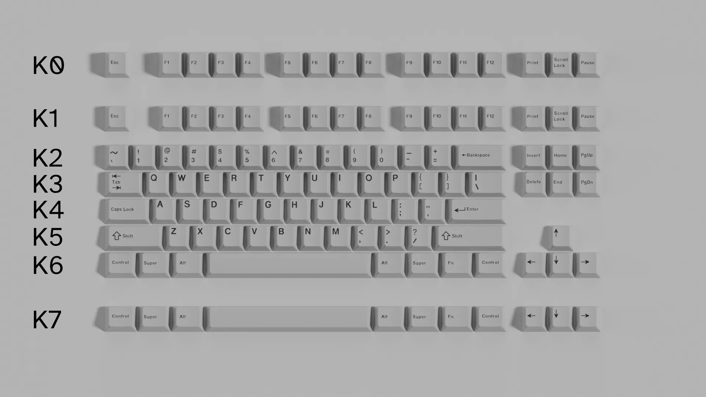
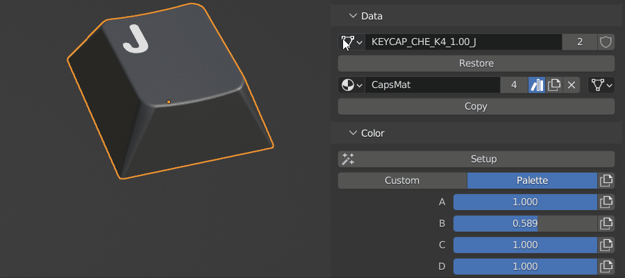
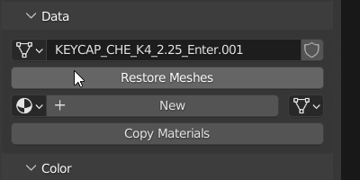
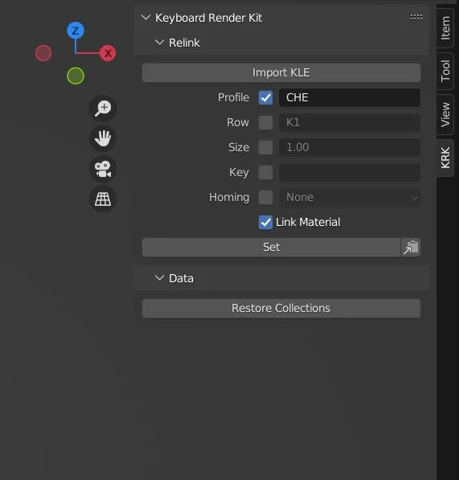
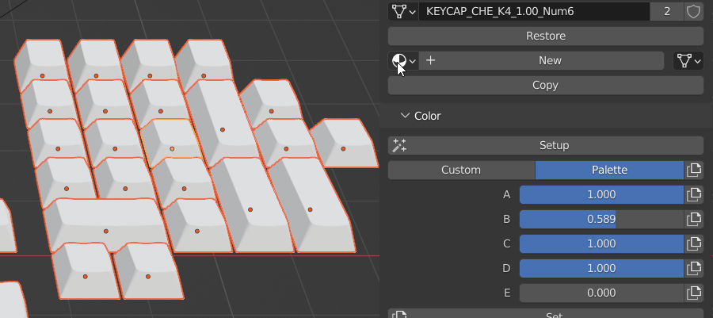
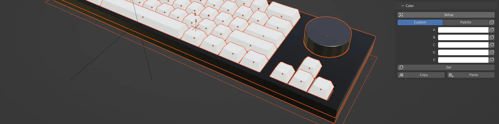
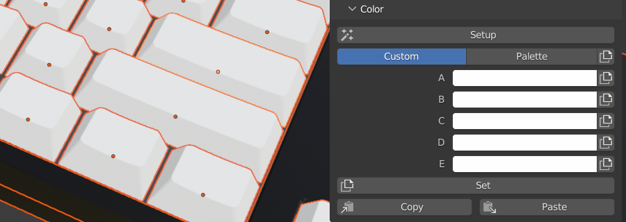

KRK 面板#

KRK 面板在側邊欄（按 N 呼出）裡，分為四個區域：Relink、Data、Color 和 Properties。最後兩個區域只在對應屬性可用時才出現。
Relink（重新連結）#
Relink 是物件資料管理器，用來快速切換鍵帽高度、行、尺寸、按鍵類型和定位鍵（homing）。凡是勾選的選項，按 Set 時都會生效。
匯入 KLE#
KRK 可以匯入 Keyboard Layout Editor 的 JSON 檔案。KLE 不給物件命名，所以匯入器會根據字根和行（K1-K6）來推斷按鍵，並在能推斷的地方放置佔位符。可以用這個 KLE 作為範例，或以它為基礎產生你自己的配列：
http://www.keyboard-layout-editor.com/#/gists/f7528ebe1348daab7abc45bc2f662c8a
Profile（高度）#

可用的高度和它們的前綴在大綱視圖的 Profile 集合裡；行和其他選項用幾次就有感覺了。把選項填進對應輸入框（區分大小寫），勾選後按 Set 生效。
Row（行）#

由於不同廠商、不同鍵帽高度使用的行編號體系各不相同，KRK 又引入了一套自己的編號，以鍵盤上的實際位置為準，從鍵盤最後方（離你最遠）的一排開始數。
高度 |
可選 |
行 |
可選 |
|---|---|---|---|
KRK |
0 |
1-2-3-4-5-6 |
7 |
Cherry |
0 |
1-1-2-3-4-4 |
5 |
DCS |
5 |
1-1-2-3-4-4 |
|
DSA |
Uniform |
||
DSS |
1-1-2-3-4-3 |
4 |
|
KAM |
Uniform |
||
KAT |
5 |
4-4-3-2-1-1 |
|
OEM |
1-1-2-3-4-4 |
||
SA |
1-1-2-3-4-3 |
4 |
有些高度的第一行和／或最後一行可以互換。
（表中的 Uniform 表示所有行同高，需要原樣輸入。）
Size（尺寸）#

在輸入框裡填入四位字元的尺寸單位（unit size）就能改變鍵帽尺寸；只要目標幾何體存在，鍵帽就會變成你要的大小。
Key（按鍵）#

在輸入框裡填鍵帽名稱，就能把鍵帽換成別的鍵帽。想換成可換字鍵帽（Releg）、無刻鍵帽（Blank）或開窗鍵帽（*_WIN）時特別方便。
Homing（定位鍵）#

用這個下拉選單在橫槓／凸點／凹面（bar/nub/scoop）之間切換定位鍵類型，然後點 Set。
Link Material（連結材質）#
Link Material 可以把目前已套用的材質帶到目標物件資料上。要開還是要關取決於你想要的結果：比如換成佔位符高度（PLA）時，就該把它關掉，免得 Capsmat 也帶到佔位符上。
Copy Settings（複製設定）#

Set 按鈕右側是 Copy Settings，它把物件資料名複製到物件資料下拉選單裡，方便查詢某個特定按鍵。
以下區域只顯示目前作用中（高亮）物件對應的選項。
Data（資料）#
Data 把屬性面板裡的物件資料和材質指派搬了過來，存取更方便。
在這裡可以快速搜尋物件資料，並將目前物件資料替換為另一個。例如複製或實例化一個鍵帽，再把副本變成軸體或衛星軸。

鍵帽因複製、匯入或貼上而無法重新連結時，使用 Restore Meshes 即可將它重新連線到檔案中同名的版本。如果要以匯入的版本為準，請重新命名其物件資料，並刪除末尾的 .001。

Restore Collections 只在選取集合資產時出現，用來把它還原成可編輯狀態。

這裡的 Copy 會把目前作用中的鍵帽上的材質連結到其他所有選取的鍵帽，同時忽略非鍵帽物件。

Color（顏色）#
Color 是一套顏色與色板管理系統，用於控制 Capsmat 中與顏色相關的屬性；只有在這些屬性可用時才會顯示。 如果選取的鍵帽沒有顏色屬性，會出現 Setup 按鈕，用來給這個鍵帽補上所需的全部屬性。

Custom/Palette 開關讓你在自訂顏色和色板兩套工作流程之間切換。顏色 A-E 和色板滑桿 A-E 透過色板節點組，讓你逐個物件地控制 Capsmat 的這些部分。選好後按 Set 會套用到所有選取的鍵帽；也可以按各自的複製按鈕，一次只複製一項。底部的 Copy 和 Paste 用來為所有選取物件建立並叫回一套選項記錄。

Properties（屬性）#
Properties 同樣只在自訂屬性可用時顯示：選取 USB 線材顯示線材選項，比如編織／TechFlex 和接頭熱縮管的顏色；選取桌墊則顯示尺寸和包邊選項。